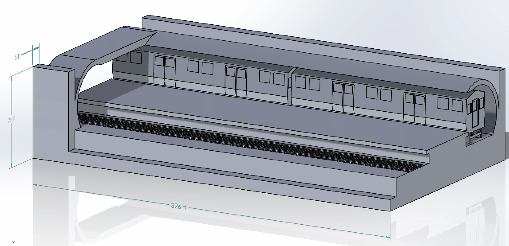
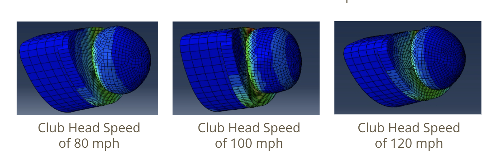

Boston Blue Line Extension
For my senior Capstone Class, three other engineering students and myself were tasked with an engineering competition to desing an Extension to the Boston's Blue Line Train. Our group handled the first half pf the extension including excavation of the stations site as well as planning the construction of water retention system. Shown below is a SolidWorks generated stations built for two train lengths to demonstrate the size of the site.
Gutterson Parking Garage: Structural Analysis
As another part of a school project, I and one other classmate performed a structural analysis of Gymnasiums Parking Garage as our final project. The analysis include most relevant loads present in Vermont, including live, dead, snow, and siesmic loads. We did a full analysis of each floor, girder, and interior colummn. Pictured below is the Gutterson Parking Garage.

Mechanics of a Golf Swing: Finite Element Analysis
One of my most open ended up projects I have had the pleasure of completing was for Computation Solids Engineering. We had to create some sort of finite element analysis using ABQUScae. I was able to introduce my passion for golf into my studies of engineering by calculating the force exerted on a golf ball from a golf club at various swing speeds. Below are the still caputures of the collusion all well as a video of the 80mph collision.
